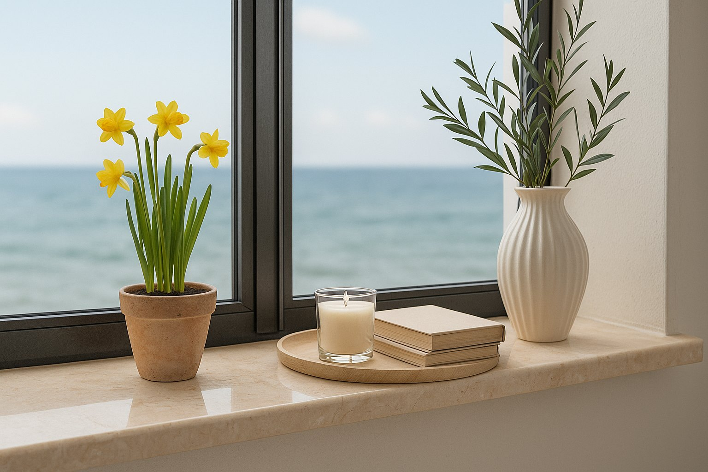
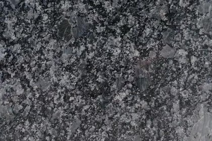
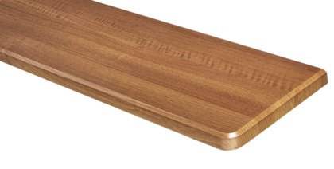

Granitowe
Kamień naturalny — bardzo twardy, odporny na ścieranie, wilgoć i temperaturę. Każdy parapet ma niepowtarzalny rysunek.
Grubość 20 lub 30 mm
Parapety wewnętrzne i zewnętrzne z kamienia, konglomeratu, MDF, PCV, stali i aluminium — dopasujesz je do stolarki okiennej, elewacji i charakteru wnętrza.
Parapety wewnętrzne wykańczają ścianę pod oknem i są ważnym elementem aranżacji. Do wyboru kamień naturalny, konglomeraty oraz ciepłe w odbiorze MDF i PCV.
Kamień naturalny — bardzo twardy, odporny na ścieranie, wilgoć i temperaturę. Każdy parapet ma niepowtarzalny rysunek.
Grubość 20 lub 30 mm
Konglomerat z 90–95% kamienia naturalnego — podwyższona odporność na zarysowania, wilgoć i wysoką temperaturę, modne jednolite barwy.
Grubość 20 lub 30 mm
Konglomerat marmurowy — szlachetny wygląd marmuru w nowoczesnym wydaniu i szeroka paleta jasnych, ciepłych odcieni.
Grubość 20 lub 30 mm
Płyta MDF z naturalną okleiną z drewna — ciepły charakter, łatwy do zgrania z podłogą, drzwiami i meblami.
Grubość 20 mm
Płyta MDF oklejana laminatem — odporna na zarysowania, wilgoć i UV. Ponad 20 dekorów: od bieli, przez beton, po drewno.
Grubość 20, 25 lub 30 mm
Wodoodporna płyta MDF z gładką, lakierowaną powierzchnią — biel, czerń i antracyt, w macie lub w połysku.
Grubość 20, 25 lub 30 mm
Komorowe profile PCV pokryte okleiną — lekkie, praktyczne i ekonomiczne rozwiązanie.
Długość do 6 m







Parapet zewnętrzny odprowadza wodę z dala od elewacji i chroni ją przed zawilgoceniem, dlatego musi być trwały i odporny na warunki atmosferyczne.

Mrozoodporny i praktycznie nienasiąkliwy granit — klasyczny, kamienny wygląd na lata, bez specjalnej konserwacji.
Grubość 20 lub 30 mm
Nowoczesne parapety z blachy aluminiowej lub stalowej o wyrazistym konturze, lakierowane proszkowo.
Dowolny kolor z palety RAL
Lekka i trwała blacha aluminiowa 1 lub 1,5 mm, odporna na korozję. Profil Standard lub Soft.
3 kolory podstawowe lub dowolny RAL
Aluminium z przetłoczeniami imitującymi płytkę klinkierową — świetnie pasuje do elewacji z cegły i klinkieru.
Profil Contour lub Soft
Blacha stalowa 0,7 mm powlekana poliestrem — sprawdzone, ekonomiczne rozwiązanie odporne na warunki atmosferyczne.
Szerokości 100–400 mm, także na wymiar
Stal z trwałą okleiną drewnopodobną — parapet w kolorze okien w okleinie.
Profil Standard lub Soft


Parapety aluminiowe, stalowe i External Contour mogą być też lakierowane proszkowo na dowolny kolor z palety RAL — w macie, satynie lub strukturze.
Szerokość, długość, narożniki i wykończenie krawędzi dopasowane do okna
Kamień, dekory drewnopodobne i kolory RAL zgrane ze stolarką
Parapety Jaro-Max — kamień, MDF, PCV, stal i aluminium
Jeśli zależy Ci na trwałości i odporności na wilgoć, np. w kuchni czy łazience, najlepiej sprawdzą się parapety kamienne — granitowe albo z konglomeratu kwarcytowego lub marmurowego. Parapety MDF i PCV to cieplejszy w odbiorze, lżejszy i bardziej ekonomiczny wybór z szeroką gamą kolorów gładkich i drewnopodobnych.
Granit to kamień w pełni naturalny — każdy parapet ma niepowtarzalny rysunek, a żyłki czy drobne przebarwienia są jego naturalną cechą. Konglomerat powstaje z kruszywa kamiennego połączonego żywicą, dzięki czemu ma bardziej jednolity, powtarzalny kolor.
Najczęściej wybierane są parapety stalowe i aluminiowe — lekkie, trwałe i dostępne w wielu kolorach, także drewnopodobnych i z palety RAL. Do elewacji z cegły lub klinkieru dobrze pasuje Alu-Płytka, do nowoczesnych projektów JM External Contour, a granit tam, gdzie liczy się klasyczny, kamienny wygląd.
Tak. Parapety przygotowujemy na wymiar otworu okiennego — dobieramy szerokość, długość, rodzaj narożników i wykończenie krawędzi, a do parapetów zewnętrznych pasujące zaślepki i łączniki.
Tak — wtedy łatwiej zgrać kolor parapetów ze stolarką i elewacją oraz dopasować ich wymiary do okien. Wszystko ustalisz w jednym miejscu, u jednego doradcy.
Skontaktuj się z nami — doradzimy technicznie i przygotujemy kalkulację cenową.